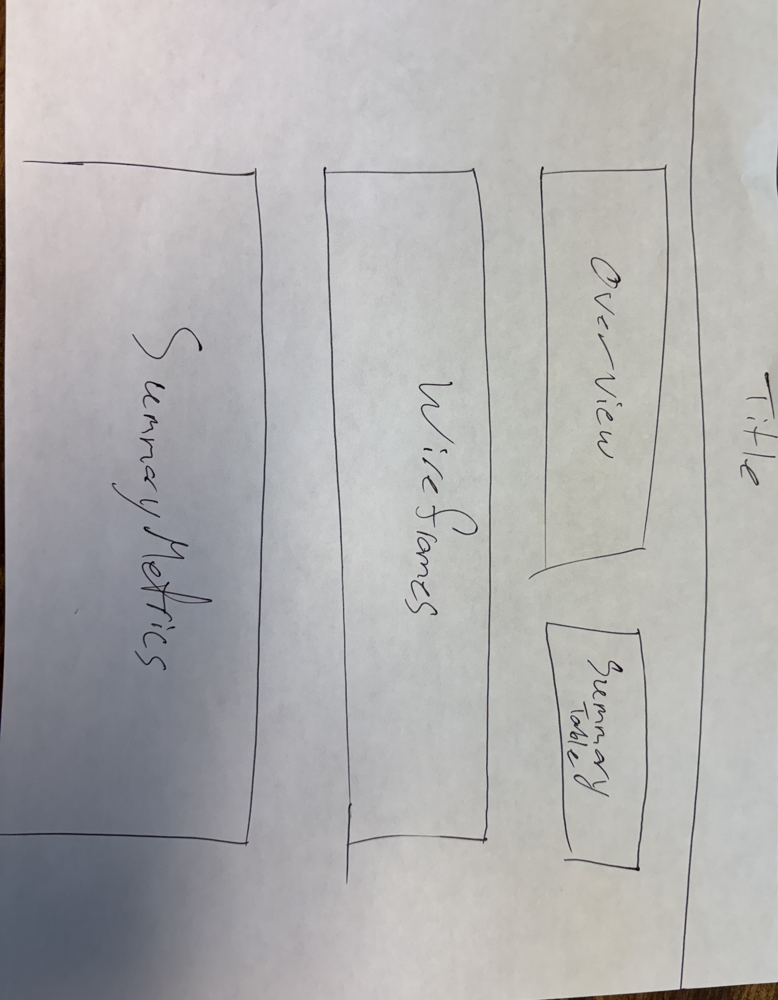
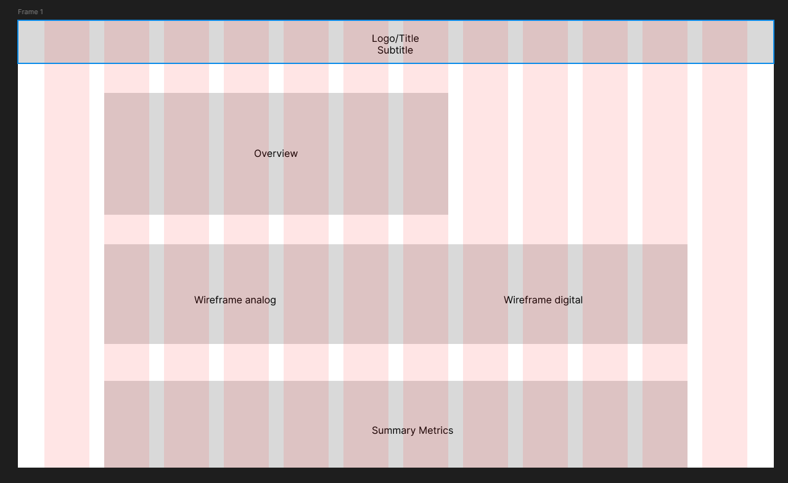
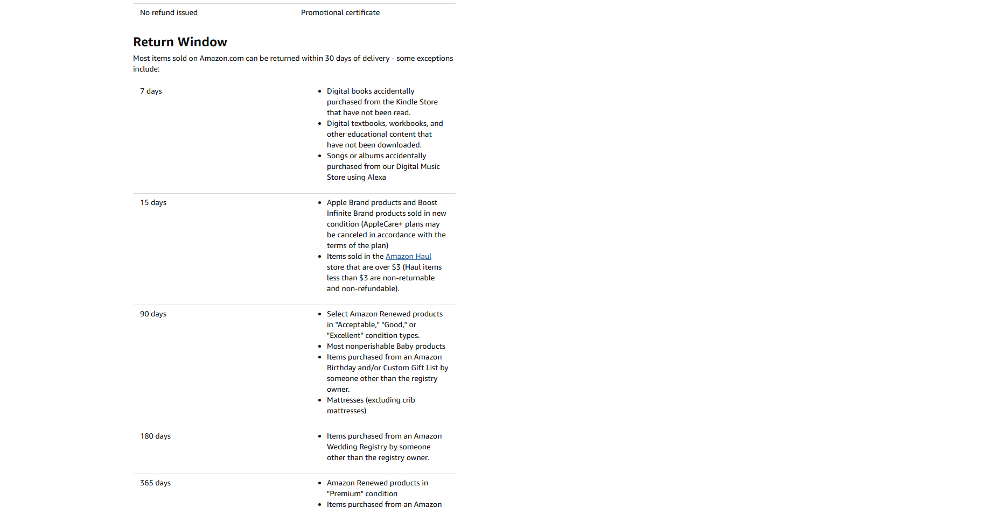
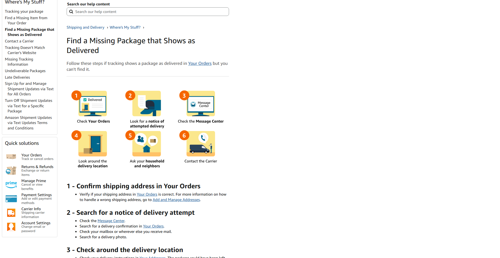
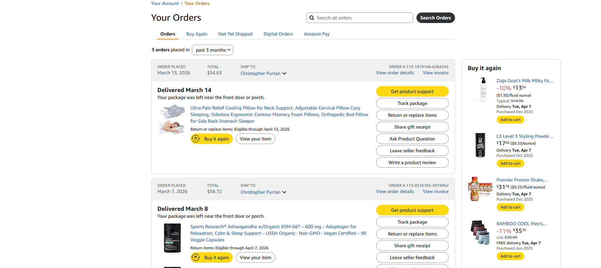

Project Overview
For this project, I evaluated the usability of the Amazon website by focusing on tasks related to navigation, support, subscriptions, and account tools. Rather than testing core shopping actions, this report emphasizes tasks that require users to locate less visible information and make sense of menu labels and account pathways.
The purpose of the usability test was to identify where users moved through the site successfully and where they experienced hesitation, misclicks, or uncertainty. The data below reflects three of my friends who each have different levels of familiarity with retail websites.
This page also includes an interactive System Usability Scale calculator so readers can enter their own values and calculate a SUS score directly on the page.
Wireframes

Analog Draft
The analog draft was used to sketch the overall page structure, including the header, findings sections, screenshots, metrics, and SUS calculator before moving into digital design.

Figma Draft
The Figma draft refined the original idea by improving spacing, visual hierarchy, and the placement of content sections before the final site was built in Bootstrap 5.
Summary Metrics
5
Tasks Tested
3
Participants
60
Average SUS Score
Participants
The tests below were conducted with three of my friends who volunteered to complete the tasks and provide feedback on their experience. Each user had a different level of familiarity with Amazon and e-commerce websites in general, which allowed me to observe a range of behaviors and challenges that different types of users might encounter when navigating the site.
- User A: Average user who adapts fairly quickly
- User B: User who is somewhat hesitant and depends on clearer labels
- User C: More cautious user who relies on trial and error before finding the correct path
Task Findings
Task 1: Find the return policy for electronics

Completion Times
- User A: 39 seconds
- User B: 67 seconds
- User C: 91 seconds
Users approached this task in different ways. Some looked in the site footer first, while others explored account menus or help links. Most users understood that the return policy existed somewhere on the site, but they were not immediately sure where policy information would be located.
The main struggle was visibility. The information was present, but users had to guess which pathway would lead to it. This created hesitation and extra clicks, especially for users who were less confident navigating large retail websites.
Task 2: Find how to contact customer service about a missing package

Completion Times
- User A: 44 seconds
- User B: 78 seconds
- User C: 110 seconds
This task produced some of the longest times in the test. Users explored several different labels, including Help, Customer Service, and Account, before identifying the most relevant route for a missing package issue.
The largest problem was that support-related wording was not immediately specific. Users knew they needed assistance, but the site did not make the correct starting point feel obvious. As a result, they spent more time interpreting labels than actually moving toward the answer.
Task 3: Locate where to view or track past orders

Completion Times
- User A: 24 seconds
- User B: 49 seconds
- User C: 72 seconds
This was one of the easier tasks overall. Most users correctly assumed that order history and tracking tools would be located within the account area, which allowed them to move through the site more efficiently than in the support-related tasks.
Even so, less confident users still needed a few extra clicks before reaching the correct section. The task was manageable, but it still depended somewhat on familiarity with standard e-commerce account navigation.
Task 4: Find how to cancel or manage a subscription/service
Completion Times
- User A: 50 seconds
- User B: 81 seconds
- User C: 112 seconds
Users had difficulty with this task because subscriptions and services are not always grouped under the wording people expect. Several users searched through account settings first before realizing they needed a more specific service or membership management area.
The struggle here came from category placement and labeling. Users often understood what they wanted to do, but not where the site expected them to go in order to do it. This made the task feel less intuitive than order tracking or general account access.
Task 5: Find where gift card balance information is located
Completion Times
- User A: 31 seconds
- User B: 56 seconds
- User C: 83 seconds
Most users expected gift card tools to appear somewhere under account-related features, but they did not always know whether to look under payments, gift cards, or general account settings first.
This task was easier than customer support and subscription management, but it still caused some uncertainty because the wording on the site requires users to predict how gift card information is categorized.
Task Timing Table
| Task | User A | User B | User C | Average Time |
|---|---|---|---|---|
| Find the return policy for electronics | 39s | 67s | 91s | 65.7s |
| Contact customer service about a missing package | 44s | 78s | 110s | 77.3s |
| View or track past orders | 24s | 49s | 72s | 48.3s |
| Cancel or manage a subscription/service | 50s | 81s | 112s | 81.0s |
| Find gift card balance information | 31s | 56s | 83s | 56.7s |
Overall Findings
The results show that Amazon is easier to use when users are dealing with features that are strongly tied to the account area, such as viewing or tracking past orders. These tasks were completed more quickly because users could predict where order-related information would be placed.
In contrast, tasks involving customer service, subscriptions, and policy information took longer and produced more hesitation. In those cases, the problem was not the absence of information, but the fact that users had to interpret the site’s wording and navigation structure before they could find the correct destination.
Overall, the site appears functional but uneven. It supports common account actions reasonably well, but tasks involving support or management features would benefit from more direct labeling and clearer pathways.
Interactive SUS Calculator
Enter a score from 1 to 5 for each of the 10 System Usability Scale statements, then click calculate to generate the final SUS score.
Calculated Score: